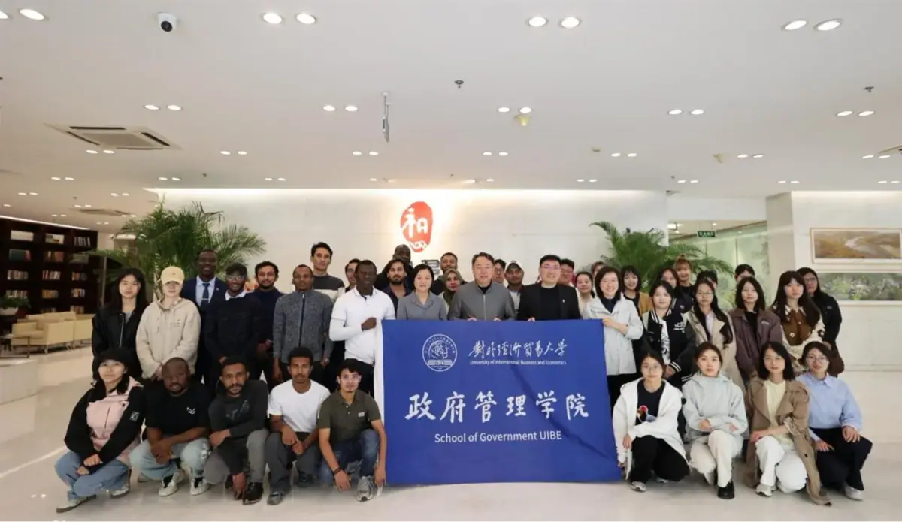
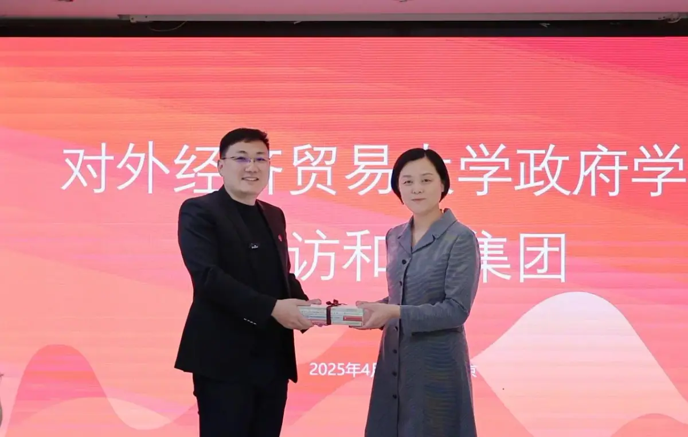

MEDIA-01
第三方报道 · MEDIA COVERAGE
董立鑫从贸大学子到全球战略顾问的职业跃迁与人才赋能实践
From UIBE student to global strategy advisor — Bruce Dong's career leap and talent empowerment.
第三方媒体报道：海鑫汇创始人兼CEO、和君咨询合伙人董立鑫（Bruce Dong）以“从贸大学子到全球战略顾问”为题分享职业跃迁经历，并主持圆桌论坛为在校生提供就业与职业发展指导。来源：对外经贸大学政府管理学院官网。
报道概述
对外经济贸易大学政府管理学院校友、海鑫汇创始人兼CEO、和君咨询合伙人董立鑫以“从贸大学子到全球战略顾问——我的职业跃迁之路”为主题分享职业发展经历，并在圆桌论坛中围绕就业选择与职业发展为在校学生提供指导。同时作为圆桌论坛主持人，邀请柬埔寨东盟银行、中关村开放基金、易飞航旅、信立集团等业界人士，围绕学业发展、就业选择、职业发展及新兴领域突围等话题与师生交流。

海鑫汇视角
从校友到主讲人，董立鑫把自身的“贸大—全球顾问”跃迁路径，变成可复制给在校生的职业方法论——人才赋能是出海生态的底层基建。

原文链接
本文为第三方媒体对海鑫汇创始人兼CEO董立鑫的公开报道整理，首发于 对外经贸大学政府管理学院官网。 查看官网原文 →
想把“出海”从口号变成可执行的路径？先做一次免费首诊判断。
预约免费首诊 →